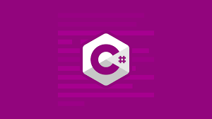

Python: é uma linguagem de programação amplamente usada em aplicações da Web,
desenvolvimento de software, ciência de dados e machine learning (ML).
Java: é uma linguagem multiplataforma, orientada a objetos e centrada em rede que pode ser usada como uma plataforma em si.
É uma linguagem de programação rápida, segura e confiável para codificar tudo,
desde aplicações móveis e software empresarial até aplicações de big data e tecnologias do servidor.

C#: é uma linguagem de programação orientada a objetos e orientada a componentes, nela você irá aprender a fornecer
construções de linguagem para dar suporte diretamente a esses conceitos,
tornando C# uma linguagem natural para criação e uso de componentes de software.
R: é uma linguagem de programação multi-paradigma orientada a objetos,
programação funcional, dinâmica, fracamente tipada, voltada à manipulação, análise e visualização de dados.